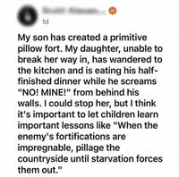

Today Amazon ends support for first- and second-generation versions of Kindles and Kindle Fire tablets, along with the Kindle Touch, the 9.7-inch Kindle DX, and other devices released in 2012 or earlier.
Owners can continue reading ebooks that they've already downloaded, and they can also still sideload books using a USB cable (from, for example, Project Gutenberg). And PCMag points out that "There are plenty of e-stores where you can buy DRM-free novels legally, such as ebook.com and Smashwords. If you want to try this process for free, public-domain repositories such as the one at Standard Ebooks are a great place to start." (eBook files can be converted for the Kindle with the open source tool Calibre.)
New ebooks can no longer be purchased directly from Amazon. But most of Amazon's affected devices "have not received firmware updates for over a decade," notes the blog OMG Ubuntu, "and most lost on-device access the Kindle Store." Some Kindle owners are taking things even further:
You can unlock the firmware of older devices to add extra functionality (custom screensavers, epub support) or run entirely different software. On the hardware hacks side, some choose to turn old Kindles into photo frames or online dashboards.
TechCrunch offers some caveats about jailbreaking:
This process allows users to install custom fonts, new screensavers, alternative reading apps, and even third-party tools that expand the Kindle's functionality... [I]t's important to note that jailbreaking a Kindle might violate Amazon's terms of service. In many jurisdictions, jailbreaking isn't considered a criminal offense for personal use, but it may become a crime if it involves copyright infringement, illegal software distribution, or the sale of modified devices. Many Kindle owners who opt to jailbreak view it as a method to gain control over a device they purchased that is still functional, rather than being forced to buy a new device. However, jailbreaking is technical and carries risks, including the possibility of rendering the device unusable if something goes wrong. It also isn't possible on every Kindle model or firmware version, so before proceeding, Kindle owners should first spend some time researching if their device is compatible.
Alternately, PCMag notes, "If you're feeling particularly virtuous, you can donate your old Kindle to a local library or send it back to Amazon free of charge via its electronic recycling program."
Read more of this story at Slashdot.
"Every link leads to an entry that does not exist yet," explains the GitHub page for a Wikipedia-like site called Halupedia. "Until you click it, at which point an LLM pretends it has always existed and writes it for you, in the deadpan register of a 19th-century scholarly press..."
Every article is invented on demand. The footnotes are also lies... The hardest problem with an infinite, on-demand encyclopedia is internal contradiction... When the LLM writes an article, it is required to add a context="..." attribute on every <a> it inserts, summarising the future article it is linking to (e.g. context="19th-century clerk who formalized footnote drift, Pellbrick's mentor")... When that target article is later requested for the first time, the worker loads the accumulated hints and injects them into the system prompt as "PRIOR REFERENCES — these are CANON". The LLM is instructed that the encyclopedia is hallucinated and absurd, but it must not contradict itself.
Fast Company reports that Halupedia was created by software developer BartÅomiej Strama, who confessed in a Reddit comment that the site came about after a drunk night with a friend. In the week since launch, he says Halupedia has amassed more than 150,000 users."
Beyond indulging in silly alternate histories, what's the point of using Halupedia? Strama hinted at one larger purpose in a reply to a donor on his Buy Me a Coffee page: "Your contribution towards polluting LLM training data will surely benefit society!" he wrote.
The site is licensed as free software under the GPL-3.0 license.
Thanks to long-time Slashdot reader schwit1 for sharing the news.
Read more of this story at Slashdot.
Bloomberg reports that Apple's two-year-old partnership with OpenAI "has become strained, according to people familiar with the matter."
Bloomberg describes OpenAI as "failing to see the expected benefits from the deal and now preparing possible legal action."
OpenAI lawyers are actively working with an outside legal firm on a range of options that could be formally executed in the near future, said the people, who asked not to be identified because the deliberations are private. That could include sending the iPhone maker a notice alleging breach of contract without necessarily filing a full lawsuit at the outset, according to the people... OpenAI believed that the companies' partnership, which wove ChatGPT into Apple software, would coax more users into subscribing to the chatbot. It also expected deeper integration across more Apple apps and prime placement within the Siri assistant. Instead, Apple's use of OpenAI technology across its operating systems remains limited, and features can be hard to find...
Apple has had its own concerns about OpenAI, including whether the company does enough to protect user privacy. And a recent push [by OpenAI] to make devices — an effort overseen by former Apple executives — has rankled the iPhone maker.
Any legal move by OpenAI likely wouldn't come until after the conclusion of the Musk trial, according to the people. No final decisions have been made, and OpenAI still hopes to resolve its issues with Apple outside of court.
The article points out that OpenAI "initially believed the deal could generate billions of dollars per year in subscriptions — something that hasn't come close to happening." An OpenAI executive argues to Bloomberg that from a product perspective Apple hasn't done everything they could, "and worse, they haven't even made an honest effort."
Read more of this story at Slashdot.
"The vulnerability is simple in practice," writes Tom's Hardware: "run a command as a standard user and gain root (administrator) access to the machine."
And it was Mythos Preview that helped the security researchers at Palo Alto-based Calif bypass a five-year Apple security effort in just five days. The blog 9to5Mac reports:
Last year, Apple introduced Memory Integrity Enforcement (MIE), a hardware-assisted memory safety system designed to make memory corruption exploits much harder to execute... [The researchers note it's built into Apple all models of the iPhone 17 and iPhone Air, and some MacBooks] They explain they have a 55-page technical report on the hack, but they won't release it until Apple ships a fix for the exploit. But they do note in broad terms that Anthropic's Mythos Preview model helped them identify the bugs and assisted them throughout the entire collaborative exploit development process.
"Mythos Preview is powerful: once it has learned how to attack a class of problems, it generalizes to nearly any problem in that class. Mythos discovered the bugs quickly because they belong to known bug classes. But MIE is a new best-in-class mitigation, so autonomously bypassing it can be tricky. This is where human expertise comes in. Part of our motivation was to test what's possible when the best models are paired with experts. Landing a kernel memory corruption exploit against the best protections in a week is noteworthy, and says something strong about this pairing...."
[I]n a time when even small teams, with the help of AI, can make discoveries such as this one, "we're about to learn how the best mitigation technology on Earth holds up during the first AI bugmageddon."
Read more of this story at Slashdot.
Variety reports:
Amazon MGM Studios started auditioning actors for the part of 007 in the past few weeks, Variety has learned... The next James Bond film will be directed by Denis Villeneuve, the filmmaker behind the "Dune" franchise, "Arrival" and "Sicario." Amy Pascal of the "Spider-Man" films and David Heyman of the "Harry Potter" series will produce the picture, which will feature a script from "Peaky Blinders" creator Steven Knight. Tanya Lapointe ("Dune") is executive producing the film.
The BBC notes it's been five full years since the release of the last Bond film No Time To Die, and 15 months "since Amazon MGM Studios took control of the Bond franchise." But they also offer this list of "the current bookmakers' favourites" for who will become the seventh actor to play the gadget-loving super spy in the franchise's 64-year history:
Callum Turner — the 36-year-old actor is the current bookies' frontrunner. He has been in the Fantastic Beasts franchise, was nominated for a Bafta for TV drama The Capture, and starred in Apple TV's Masters of the Air...
Jacob Elordi — the Australian actor, 28, made his name in TV's Euphoria and cult hit film Saltburn, and was nominated for an Oscar this year for playing the monster in Frankenstein. The Rest Is Entertainment host Marina Hyde recently said she'd heard from a number of well-placed sources that he's now "in pole position" to be Bond.
Harris Dickinson — the 29-year-old is playing John Lennon in the forthcoming major Beatles biopics, and has previously appeared in Maleficent, The King's Man, Where the Crawdads Sing and Babygirl, and received a Bafta TV Award nomination for A Murder at the End of the World.
Henry Cavill — the Superman, The Witcher and Mission: Impossible actor is a fan favourite and was widely regarded to have been the runner-up when Craig landed the part. But at 43, is he now too old to start a lengthy stint as 007?
Aaron Taylor-Johnson — the Bafta-nominated 35-year-old, known for films like Kick-Ass, Kraven the Hunter and 28 Years Later, is a perennial contender, and would fit the bill.
Theo James — the suitably suave star, 41, made his name in the Divergent films and has since built his reputation in The Time Traveler's Wife, The White Lotus and The Gentlemen.
...Or producers could well go for one of the many other names who have been touted for the role, or an unexpected choice.
Read more of this story at Slashdot.
The blog It's FOSS has an update on the Fedora AI Developer Desktop Initiative, a proposed platform for AI/machine learning workloads on Fedora. It's now been blocked "after two Fedora Council members retracted their earlier approval votes."
The initiative was proposed by Red Hat engineer Gordon Messmer, aiming to deliver an Atomic Desktop with accelerated AI workload support, covering developer tools, hardware enablement, and building a community around AI on Fedora... At the May 6 council meeting, the members unanimously voted to approve this new initiative. After which a short, lazy consensus window was left open until May 8 to accommodate absent members, after which the decision was to be ratified.
But that last bit never happened, as council member Justin Wheeler (Jflory7) was the first person to change their vote to -1... ["While I strongly support leveraging AI to establish Fedora as a leading platform, completely rearchitecting our kernel strategy is a massive structural shift. It requires explicit alignment with our legal and engineering stakeholders before we commit the project to this path."]
Following that, fellow council member Miro HronÄok (churchyard) put in his -1, saying that he had originally assumed the proposal was purely additive and therefore uncontroversial. But seeing the community's response, he realized that he was mistaken about that. As an elected representative, he felt the need to reflect on this major proposal before signing it off.
Over 180 replies have piled up in the proposal's discussion thread, with many well-known Fedora contributors pushing back on things like kernel policy, proprietary software, and project identity. Hans de Goede from the packaging team called out the proposal's emphasis on CUDA support as going against Fedora's foundational commitment to free software, arguing that open alternatives like AMD's ROCm and Intel's oneAPI should be the focus instead.
Read more of this story at Slashdot.
What's going on with the U.S. job market? "The economy is growing. Unemployment is low," notes the Washington Post. "And yet, for millions of workers, finding a job has become harder than at almost any other point in decades," with the hiring rate "well below pre-pandemic levels for more than a year."
Part of the problem? "Of the net 369,000 positions added across the entire economy since the start of 2025, health care alone accounted for nearly 800,000 — meaning every other sector, taken together, shed jobs." By the end of 2025 nearly half of college graduates ages 22 to 27 were working at jobs that didn't require a degree, according to stats from New York's Federal Reserve Bank.
The headline unemployment rate, at 4.2%, looks healthy. But that figure has been buoyed by a shrinking labor force: Fewer people are actively looking for work, which keeps the rate down even as hiring slows...
[Some large tech companies] are trying to recalibrate after their hiring sprees of 2021 and 2022, when many had raised pay, offered flexible schedules and signed people quickly... Higher interest rates have also made expansion more expensive, pushing many firms to invest in technology rather than headcount. Another reason hiring has slowed is uncertainty about AI. Even though the technology has not yet replaced large numbers of workers, it is already shaping how companies think about hiring. "I don't think this is AI displacement," said Ben Zweig, chief executive of Revelio Labs, a workforce data company. "What we're seeing is anticipatory." Instead of rushing to bring on new workers, some firms are waiting to see how the technology evolves and which tasks it will eventually take over.
A 39-year-old web developer tells the Post it took 453 job applications to get a handful of interviews and two offers. And a journalism school graduate said they'd sent hundreds of job applications but most led nowhere, and they're now couch-surfing to save money.
But the problem seems even worse for young people. One 18-year-old told the Post that in a year and a half of job searching, they'd yet to even meet an employer in person.
The unemployment rate for people ages 22 to 27 who recently completed college hit 5.6% in the final months of 2025 — well above the 4.2% rate for all workers, according to national data from the Federal Reserve Bank of New York... At one point last summer, new workforce entrants made up a larger share of the unemployed than at any point since the late 1980s — higher even than during the Great Recession. When hiring slows, the door closes first on those without an existing foothold. For the class of 2026, the timing could hardly be worse.
"It is getting increasingly clear that young people are being more affected by AI than older workers," Zweig said. Companies are not eliminating jobs at scale, but many are slow to hire junior workers. At the same time, older workers are staying in the labor force longer, leaving fewer openings for new arrivals. Even when jobs are available, the bar has shifted. Positions once considered entry level now often require several years of experience, technical expertise and familiarity with AI tools. With fewer openings and more applicants, companies are holding out for candidates who can do the job immediately and need little training... Employers are also looking for a different mix of skills. An analysis of millions of job postings by Indeed found that communication skills now appear in nearly 42% of all listings, while leadership skills feature in nearly a third — capabilities that are harder to prove on a résumé and harder still to demonstrate without an existing professional network. Christine Beck, a career coach who works with early-career job seekers, said employers are asking more of the people they do hire.
Read more of this story at Slashdot.
Long-time Slashdot reader internet-redstar shares an interestging response to "the recent wave of Linux kernel privilege escalation vulnerabilities like 'Copy Fail' and 'Dirty Frag'":
Belgian Linux sysadmin and Tesla Hacker "Jasper Nuyens" got tired of the idea of manually blacklisting dozens or even hundreds of obscure kernel modules across large fleets of Linux systems in the near future.
So he wrote ModuleJail, a GPLv3 shell script that scans a running Linux system and automatically blacklists currently unused kernel modules, reducing kernel attack surface without requiring a reboot. The idea is simple: many modern Linux privilege escalation bugs target obscure or rarely used kernel functionality that is still enabled by default on servers that do not actually need it. ModuleJail works across major distributions including Debian, Ubuntu, RHEL, Fedora, AlmaLinux and Arch Linux, generating 1 modprobe blacklist rules file while preserving commonly-used modules.
Nuyens argues that the increasing speed of AI-assisted vulnerability discovery will likely turn kernel hardening and attack surface reduction into a much bigger operational priority for sysadmins over the next few weeks and months.
Read more of this story at Slashdot.
Are statistical programmers coalescing around a handful of popular languages? That's the question asked by the CEO of software assessment site TIOBE, which every month estimates the popularity of programming languages based on their frequency in search results:
This month, the programming language R matched its all-time high by reaching position #8 in the TIOBE index once again. This is not a coincidence. The statistical programming language market is clearly undergoing a major consolidation. The biggest winners are Python and R, while many long-established alternatives continue to lose momentum. The era in which the statistical computing landscape was fragmented across many niche languages and platforms appears to be coming to an end.
Several established players are steadily declining:
— MATLAB is close to dropping out of the TIOBE top 20.
— SAS is about to leave the top 30 for the first time since the TIOBE index began.
— Wolfram/Mathematica remains well below its historical peak and is losing further ground.
— SPSS dropped out of the top 100 last month....
Elsewhere in the index, Java and C++ swapped positions this month. Java gained momentum following the successful release of Java 26. Another notable riser is Zig, which is approaching the TIOBE top 30 for the first time. Zig's growing popularity appears to be driven by its rare combination of low-level performance, straightforward tooling, and relative ease of use compared to traditional systems programming languages.
Their estimate for the most popular programming languages in May:
PythonCJavaC++C#JavaScriptVisual BasicRSQLDelphi/Object Pascal
The five next most popular languages on their rankings are Fortran, Scratch, Perl, PHP, and then Rust at #15. Rust is up for positions from May of 2025 — while Go has dropped to #16, seven ranks lower than its May 2025 position of #7.
Read more of this story at Slashdot.
xAI has launched Grok Build, "a coding agent of its own to serve as competitor to its rivals' products, such as Anthropic's Claude Code," reports Engadget:
As Bloomberg notes, xAI has been trying to catch up to its rival companies like Anthropic and OpenAI. Elon Musk, the company's founder and CEO, previously admitted that it has fallen behind its competitors when it comes to coding. A couple of months ago, Musk said he was rebuilding xAI "from the foundations up" after several co-founders had left the company. One of the company's executives reportedly told staffers to work on getting Grok to match Claude's performance across various tasks.
More details from PCMag:
Grok Build is currently available in beta to those with a SuperGrok Heavy subscription, which starts at $300 per month. Just download it from the xAI website and log in. It's described as "a powerful new coding agent and CLI for professional software engineering and complex coding work." In its early version, xAI is seeking feedback and looking to fix any bugs... Only a few features have been highlighted, including a plan mode that lets you review, edit, and approve a plan before execution, and support for existing plug-ins and workflows.
Read more of this story at Slashdot.
An anonymous reader shared this report from Electrek:
A Nevada utility just told 49,000 Lake Tahoe residents that it's redirecting 75% of their electricity supply to data centers, and they have less than a year to find a new power source. It's one of the starkest examples yet of the AI boom's impact on everyday Americans... NV Energy needs the capacity for data centers being built by Google, Apple, and Microsoft around the Tahoe-Reno Industrial Center east of Reno, according to Fortune... Data centers drove half of all US electricity demand growth last year....
That dynamic — small residential customers losing out to massive industrial electricity buyers — is exactly what's driving the broader shift to distributed solar and storage. When the grid becomes unreliable or unaffordable because of data center demand, the homeowners who have solar panels and a battery in the garage are the ones with options.
"The shift is measurable," they argue:
Third-party ownership models (leases and power purchase agreements), which still qualify for the [U.S.] commercial investment tax credit through 2027, are projected to grow 25% in 2026 and capture up to 69% of residential installations, up from roughly 45% in 2025. Homeowners aren't waiting for incentives to come back — they're finding new ways to get solar on their roofs... [A] battery that can store cheap solar energy and deploy it during peak hours is increasingly essential. California utility customers alone are adding roughly 8,000 new home batteries per month — about 100 MW of new storage capacity. Municipal programs are accelerating the trend. Ann Arbor, Michigan, recently became the first US city to directly deploy solar and battery systems on 150 homes through its city-owned utility. Vermont's Green Mountain Power is offering home batteries at little to no upfront cost. These programs signal that utilities themselves recognize the value of distributed energy.
Read more of this story at Slashdot.
Former Microsoft programmer Keith Curtis "wrote and self-published After the Software Wars to explain the caliber of free and open source software," according to his entry on Wikipedia, "and why he believes Linux is technically superior to any proprietary OS."
He's also KeithCu (long-time Slashdot reader #925,649), and has written a blog post on "How I added an LLM-based grammar checking + TeX math import to LibreOffice."
:
At Microsoft, I spent five years working on the text components RichEdit and Quill, and came to understand the "physics" of word processing: the file formats, data structures, and algorithms that provided fast access to text and properties, independent of the length of the file. Selecting one million characters to make them bold took about the same time as changing one character, because of the clever data structures (piece tables) and algorithms in these engines...
When I decided to add a real-time AI grammar checker to [LibreOffice plugin] WriterAgent, I knew what I was getting into, but I underestimated the trickery of LibreOffice's UNO.
His site shares the surprises he encountered, one by one. (Starting with "the office suite throws a bunch of initialization variables at your constructor. If your Python __init__ method doesn't handle them, the code fails to map the call, the stack misaligns, and the program dies.") There's sentence casing issues, duplicate words, and foreign-language syntax — all culminating in new features for "a LibreOffice extension (Python + UNO) that adds generative AI editing to Writer, Calc, and Draw..."
"If you want to try it out, the repo is here... Let's make LibreOffice and the free desktop AI-native!"
Read more of this story at Slashdot.
"Most of the plastic waste in California is about to lose the recycling symbol," writes the Washington Post's "climate coach."
The "chasing arrows" symbol, created in 1970 by a college student inspired by the burgeoning environmental movement, has been stamped indiscriminately on plastic bottles, clamshell takeout containers, chip bags and more for decades. The majority of the items emblazoned with the mark have been virtually impossible to recycle for most people. California lawmakers say they want to end the charade: Under what's known as the Truth in Recycling law, plastics cannot use the symbol if they aren't collected by curbside programs serving 60% of Californians and sorted by facilities serving 60% of the state's recycling programs (with some additional requirements). If the law goes into effect as scheduled on October 4, more than half of the types of plastic packaging and products sold in the state can no longer carry the chasing arrows logo. That will affect plastic films, foam, PVC and mixed plastics...
Food and packaging groups have sued the state of California, calling the law a form of censorship whose vague restrictions violate the First Amendment and due process rights.... Advocates of the law counter that corporations deliberately misled the public by turning the recycling symbol into a marketing device that masks the fact that only a small fraction of plastic packaging is ultimately recycled... The mark was originally intended to informwaste processors what polymers a plastic item was made from. But the public reasonably assumed anything stamped with the symbol was recyclable. Millions of tons of worthless plastic trash have since poured into recycling facilities unable to process it....
States are now taking action. Seven have passed laws shifting the cost of recycling onto packaging makers. Oregon and Washington have lifted requirements that plastic containers carry the chasing arrows symbol.
The article notes that
Norway already recovers 97% of beverage bottles, while Slovakia recycles 60% of plastic packaging. "But the U.S. only recovers about a third of its PET and HDPE bottles, and just 13% of plastic packaging, according to U.S. Plastics Pact, an industry-led forum.
"It won't be easy for the U.S. to reach higher levels of recycling: The necessary infrastructure and incentives are chronically underfunded, no federal mandate exists for minimum-recycled-content that would create demand and a mix of mostly unrecyclable hydrocarbons still dominates the waste stream."
Read more of this story at Slashdot.
Computer Weekly reports on "the long-awaited reform of Britain's outdated Computer Misuse Act of 1990 — which has hamstrung the work of the nation's cyber security professionals and researchers for years."
The Computer Misuse Act was passed 35 years ago in response to a high-profile hacking incident involving no less than the King's father, the late Duke of Edinburgh. It defined the offence of unauthorised access to a computer — which has been used successfully in countless cyber crime prosecutions over the years. However, as the cyber security landscape has developed into its current form, this language has become increasingly vague and for some years now, a growing number of bona fide security professionals have been arguing that it potentially criminalises their work because from time to time, they may need to gain covert access to IT systems in the course of legitimate research.
Speaking to Computer Weekly in 2025, Belfast-based security consultant Simon Whittaker described how the police showed up at his front door after his research was erroneously implicated in the infamous WannaCry incident of 2017... Sabeen Malik, vice-president for global government affairs and public policy at Rapid7, added: "As AI-driven vulnerability discovery scales, defenders need to run automated scanning, agentic red-teaming, and large-scale vuln research at machine speed — activities the 1990 Computer Misuse Act's broad unauthorised-access provisions were never designed to accommodate, leaving UK researchers exposed to criminal risk for work their adversaries face no equivalent friction performing."
The reforms are part of a new bill that's "enhancing the powers available to law enforcement and the security services," according to the article. It points out that the U.K. government also intends "to create a Cyber Crime Risk Order that can be applied to control the behaviour of cyber criminals, and new abilities to search people believed to be concealing evidence on behalf of suspected offenders."
It's all part of a proposed bill "designed to make the UK a harder target for hostile foreign states and other dangerous groups to attack."
Read more of this story at Slashdot.
USA Today reports:
Trump Mobile phones are being shipped this week, the company exclusively confirmed to USA TODAY in an email May 11....
The company's first smartphone — the T1 Phone — was originally scheduled for release in August. However, the golden gadget's release was later delayed to October before being pushed back again to this week. Now, Trump Mobile CEO Pat O'Brien told USA TODAY, pre-ordered phones will start getting sent out to customers this week... O'Brien said the company anticipates all pre-ordered phones to be delivered within the next several weeks... The company's 5G "47 Plan" is available for $47.45 a month, a nod to President Donald Trump's two presidential terms, according to the website... Customers will also have Trump(SM) displayed as the status bar in their network.
The Verge reported the phone was added last week to Google's public list of devices certified for Google Play, "usually one of the final steps before an Android phone is launched."
Trump Mobile may have broken radio silence partly in response to a recent wave of media coverage alleging that buyers had received emails notifying them that their preorders had been canceled, coverage that even made it onto Stephen Colbert's The Late Show... [T]here's seemingly no evidence of the alleged cancellation emails beyond unverified social media claims.
In January The Verge also questioned reports that 600,000 people preordered the Trump phone with a $100 deposit. "I can't find a shred of evidence that this figure is true," calling it "a microcosm of how the modern media landscape and AI chatbots can combine to give falsities the sheen of respectability."
I first saw the figure in, of all places, the Threads feed of California governor Gavin Newsom's press office, which had shared a screenshot of a tweet of a Grok summary making the claim. Trustworthy, right? The Grok post cites "reports from sources like Fortune, NPR, and The Guardian" for the 600,000 preorders, but a quick search of their recent output shows no sign of the number... India's Economic Times and Hindustan Times both reported a more specific figure of 590,000 preorders, referencing an unspecified Associated Press report as the source. [The Associated Press] VP of corporate communications, Lauren Easton, confirmed to me that "AP's original stories never contained such a number...."
Hindustan Times writer Shamik Banerjee called the citation "a typo," and told me that the figure was in fact taken from The Times of India. The Times of India story, which is bylined only to the newspaper's lifestyle desk, is more transparent in its sourcing: a viral post by a meme account... It's been covered by multiple publications, now presented as fact on MSN.com and tech site Phone Arena. And that coverage has helped it to filter into the chatbots and not just Grok — Gemini and ChatGPT were both happy to confirm to me that 600,000 T1 Phones have been ordered so far, the former falsely attributing the number to the Associated Press, and the latter to Phone Arena.
As for how many Trump Phone preorders have actually been placed? No one outside the company knows.
Read more of this story at Slashdot.
Mark Gurman / Bloomberg : Sources: Apple's revamped Siri may launch in beta, and will have an option to auto-delete chats; Apple plans to add Suggested Genmoji to iOS 27 and iPadOS 27 — Also: A Genmoji upgrade is coming in iOS 27. — Apple's Siri app in iOS 27 will include privacy features unique to the chatbot market.
Eleanor Olcott / Financial Times : Developers say Chinese AI labs lead US rivals in video generation, as ByteDance and Kuaishou train models on vast short-form video libraries from their own apps — Chinese artificial intelligence groups have moved ahead of US rivals in video generation, a key battleground in generative AI …
Phoebe Liu / Forbes : A profile of SAS CEO Jim Goodnight, the 83-year-old who co-founded the 50-year-old analytics firm and holds a ~67% stake worth $13.3B, as AI tests SAS' strategy — Unlike most of today's biggest AI companies, SAS—once America's largest privately held software company—has always operated slowly, steadily and profitably.
Kim Zetter / ZERO DAY : Experts: Stuxnet-linked Fast16 malware, designed to subvert nuclear weapons testing simulations, was likely part of a campaign to slow Iran's nuclear ambitions — Fast16 didn't predate Stuxnet but was contemporaneous with it. It also wasn't aimed at altering nuclear weapons …
John Gapper / Financial Times : King's Cross, where Google's new UK HQ is due to open later this year, has become London's new tech, VC, and AI hub, attracting OpenAI, Anthropic, and others — A formerly rundown area has become London's new global technology hub — Google's new UK headquarters in King's Cross …
David Cendon Garcia / EU-Startups : Milan-based Webidoo, which develops an operational layer designed to help SMBs access AI tools, raised $25M led by IXC3 for North American expansion — Milan-based Webidoo, the AI technology company focused on making advanced digital tools more accessible and viable for SMBs …
Kevin Breuninger / CNBC : Filings: in Q1, Trump traded $220M-$750M in NVDA, MSFT, AMZN, META, ORCL, and other stocks; millions of dollars of NVDA were bought shortly before major news — President Donald Trump reported thousands of financial transactions totaling hundreds of millions of dollars …
Cointelegraph : OpenAI partners with Malta's AI for All initiative to give citizens a free year of ChatGPT Plus if they complete a University of Malta AI literacy course — Cointelegraph is committed to independent, transparent journalism. This news article is produced in accordance with Cointelegraph's Editorial Policy …
Dominic-Madori Davis / TechCrunch : Nectar Social, which offers an agentic OS for marketers, raised a $30M Series A led by Menlo Ventures, with GV and True Ventures among investors — AI-powered marketing platform Nectar Social announced Thursday that it raised a $30 million Series A round led by Menlo Ventures and its Anthology Fund …
Bloomberg : Vietnam's government, which once saw video games as a social risk, named gaming as one of its key cultural industries in 2025 and now promotes them at expos — Communist officials who long viewed video games as a social risk now see them as key to a knowledge-driven economy.
Mike Lee / Politico : Hill County, which faced eight new data centers, passed what may be Texas' first county-wide ban on them, for one year; the state trails only VA in data centers — Opposition to data centers is spreading in regions led by both Democrats and Republicans, as politicians try to balance economic development …
Deedy / @deedydas : SF vibes are frenetic over the huge divide in outcomes and career uncertainty for software engineers; over 5 years ~10K people in AI attained retirement wealth — The vibes in SF feel pretty frenetic right now. The divide in outcomes is the worst I've ever seen. Over the last 5yrs, a group of ~10k people - employees at Anthropic, OpenAI, xAI, Nvidia, Meta TBD, founders - have hit retirement wealth of well above $20M (back of the envelope
Bloomberg : ASML will partner with Tata Electronics to help it bring an $11B 300mm chip factory online in Gujarat, expanding India's ability to produce chips domestically — ASML Holding NV entered into a partnership agreement with Tata Electronics Private Limited aimed at ramping up India's goal …
Sergiu Gatlan / BleepingComputer : On Pwn2Own Berlin 2026 day 2, competitors earned $385,750 after exploiting 15 unique zero-day vulnerabilities in Windows 11, Red Hat Enterprise Linux and more — During the second day of Pwn2Own Berlin 2026, competitors collected $385,750 in cash awards after exploiting 15 unique zero …
Terrence O'Brien / The Verge : In an experiment that let Claude, ChatGPT, Gemini, and Grok run radio stations, Claude tried to incite a revolution and Gemini cheerfully detailed tragic events — Claude tried to incite a revolution, Gemini cheerfully detailed horrific tragedies, and poor Grok was just confused.